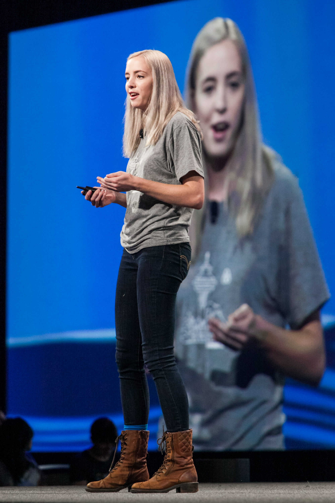
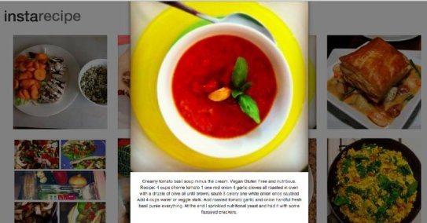
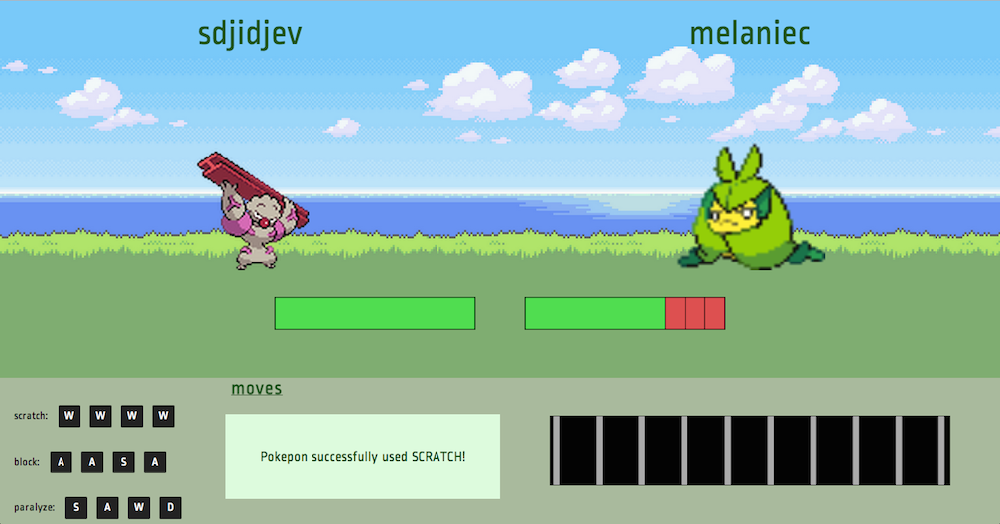
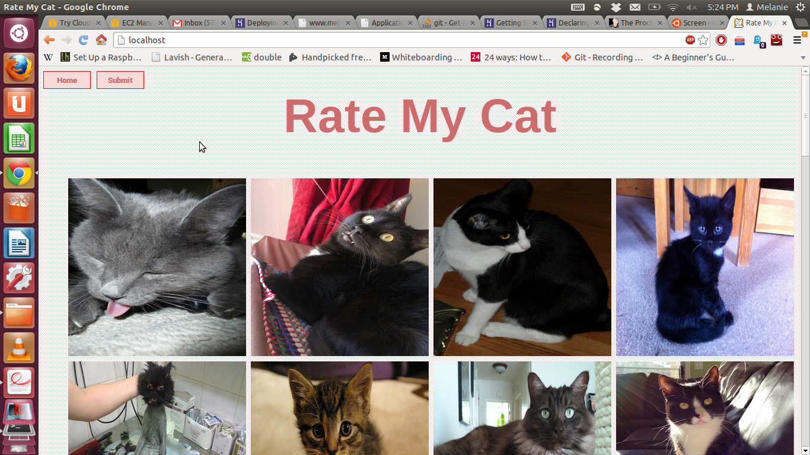
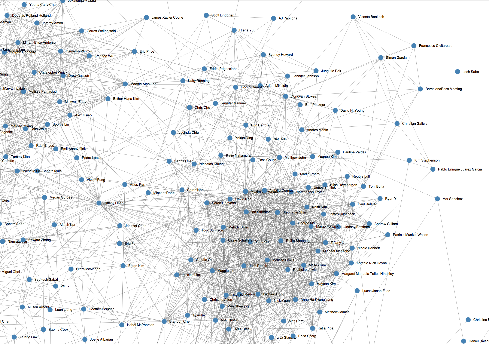
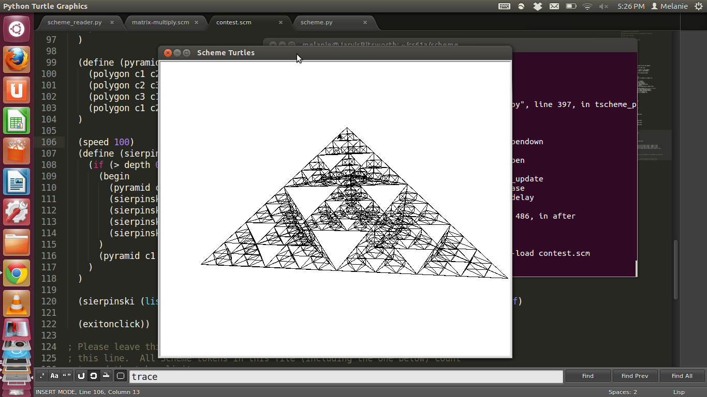
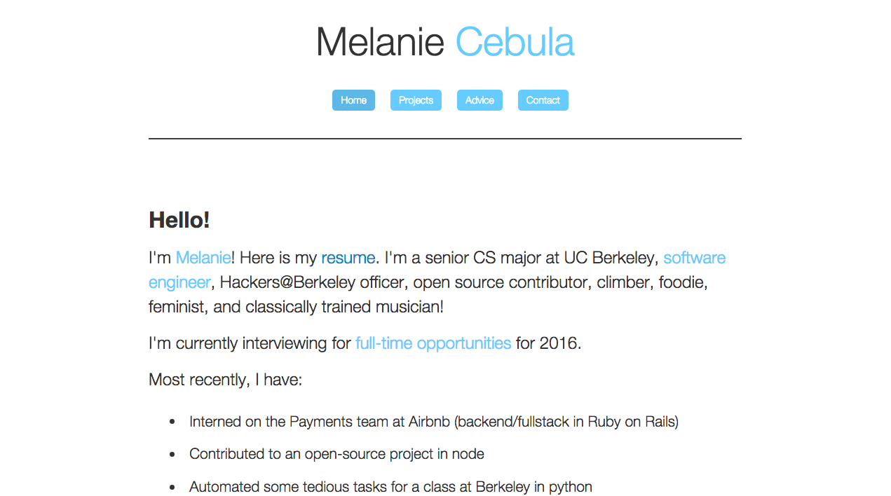

Hey!
I'm Melanie. I'm a software engineer. I live in San Francisco, but travel often and sometimes work remotely. I work on infrastructure at Airbnb. I like to give technical talks about what I work on.
Some of the things I've worked on:
Airbnb, Infrastructure
- Evolve Airbnb's microservices architecture with a new infrastructure based on kubernetes and the principle that "everything about a project is in one place in git, and deployed with one process", with nearly 40% of hundreds of production-facing services on the new infrastructure
- Develop tooling that simplifies k8s files
- Develop tooling that automates building a "hello world" service
- Develop tooling that simplifies interacting with services (kubectl++ wrapper)
- Prototype improved docker-based builds and deploys for kubernetes services
- Debug and improve overall stability of infrastructure as part of kubernetes adoption (logs, metrics, service discovery)
- Develop a solution for running most k8s services as an unprivileged user without compromising usability and debuggability
- Give external talks about Airbnb infrastructure, reaching over 10,000+ members of the community
- Visit Airbnb offices around the world to connect with developers and their needs
- Previously lead infrastructure incident response team, solving major outages (ex: related to Spectre/Meltdown in late 2017-early 2018)
- Lead a "merge queue" project that scaled out contributions and production deploys to a monolithic codebase for 500-1000+ engineers and millions of lines of code
- Made significant startup time improvements to a Rails monolith in development by taking advantage of advanced Rails autoloading concepts and behavior
- Automate parts of the developer workflow (ex: automatic reverts) to reduce time to remediation for incidents
- Reliability and efficiency improvements to scale tests, builds, and deploys for hundreds of developers
Prevoius work:
Airbnb, Payments Team
- Built out Employee Travel Credit Program and Airbnb Credit
- Designed and created data models, backend, and frontend using MySQL, Ruby on Rails, and Javascript
- Processes millions of USD in transfers between accounts
Dat Project, Datscript
- Open source contribution to the Dat Project
- Created a parser for a simple format based on indenation in node.js
- Simplifies writing scripts for scientists
Facebook, Pages Mobile Team
- Pages Draft Posts for iOS: Page admins can create, edit, delete, and publish drafts
Team Projects
A taste of some of my hackathon projects
Instarecipe:
Uses the instagram API to display recipes.

Movie Mashups:
Use a markov chain to mash two movie plots together. Use a (nltk) classifier to identify main characters and only use one for maximum mashiness.
Pokepon:
Start a battle against your friend and type the battle commands in time with the beat of a song on your Soundcloud playlist.
Won the Firebase API award at the PennApps 2013.

Geo.ly
Real-time navigation app to find your friends using HTML5 geolocation and the Google Maps API.

Boxel
A multiplayer Capture the Flag game for voxel.js, a minecraft-inspired voxel game built in the browser with Javascript.
Rate My Cat:
Vote for your favorite cat and watch it soar to the top! Won 'Learned the Most' at Hackjam 2013. 
Solo Projects
FB Graph:
Messing around with d3.js to visualize my FB friend graph.

Scheme Art Contest Submission:
Uses a Scheme Interpreter (built in class) and Python Turtle Graphics
to draw Sierpinski's Triangles in 3D in Scheme.
Won first place for the heavyweight division.

Personal Website
How self-referential!
This is my oldest project, and has evolved over the years as I lazily try to keep it up-to-date.

Class Projects
Computer Vision:
Say Hello!
Here is my resume.
Contact:
twitter: @melaniecebula
linkedin: linkedin.com/in/melaniecebula
email: melaniecebula.bass@gmail.com
github: github.com/melaniecebula
facebook: facebook.com/melanie.cebula